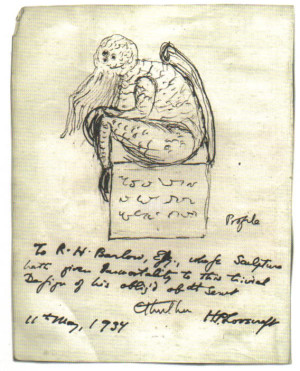

Further Comment: “They Took Our Myths”
The reason that this blog’s been quiet this week is that I was kindly invited by SF author Charles Stross to guest-blog over at Charlie’s Diary, his extremely long-running and very popular blog.
I’ve had a great time over there, writing two posts. The first, “They Took Our Myths” proposed that the reason the Cthulhu Mythos is so popular is because it’s the most recently created mythic structure that we’re allowed to access as storytellers - all the more recent ones, like Middle Earth, the Buffyverse, the Marvel universe, Star Wars, and so on, are locked up in gilded cages.
And the second, “What’s The Best Medium For A Storyteller In 2015 And Beyond?” was a maybe-ever-so-slightly-overambitious attempt to do a State Of The Union on every available artistic medium in 2015, figure out which are the most approachable for indie creatives right now, and also look at what’s going to change in future.
Both of them generated a lot of fascinating discussion, not only on Charles’s site but also over on Reddit, Hacker News, Metafilter and various other places. And so I thought I’d round off the week by collecting my thoughts on both of them in blog posts over here.
Today I’ll start with “They Took Our Myths”.
Fanfic
One very interesting point that several commenters raised was that I’d completely omitted non-profit fan-fiction from my discussion, and that’s surely an example of many, many people interacting with and creating from their myths, just as I’m discussing. Of course, that’s absolutely true - fan fiction represents an evolution and adoption of these myths by their audience.
I feel very uncomfortable with going on to say “and therefore everything’s fine”, though. For starters, fan fiction exists at the whim of the original creator - it can be snuffed out any time they like, pace the Streisland effect. That doesn’t seem like a stable or reasonable situation for an entire community’s interaction with the myths they care so much about to be in.
On a related note, that means that fan fiction is a strictly glass-ceiling affair. It exists as an underground subculture - an enthusiastic one, but one that almost never boils over outside a very specific group of people who create it, who are a tiny subset of those for whom the myths it uses are relevant. In the last 15 years, I can only think of two fan works that have broken out to become relevant outside their fan fiction culture - “Harry Potter and the Methods of Rationality” and 50 Shades Of Grey.
Is that because it’s held back by its noncommerciality, or is that because fan interactions with a myth just don’t have the wide appeal of the original myth? It’s a good question.
I think I’d feel more comfortable with the idea that our myths are actually perfectly accessible to us through the medium of fanfic if it didn’t carry such a stigma, too. Perhaps that’s just a natural result of a much smaller body of creators for each fictional universe, with no gatekeepers that I’m aware of, but fanfic still has the reputation of being, well, terrible. And that’s a reputation that similar interactions with myth outside copyright don’t carry - no-one’s avoiding Charles’s “Laundryverse” books or the BBC “Sherlock” series because of the same stigma.
What is very interesting is the effect of the original creators interacting with their fanfiction community. The TV show “Supernatural” is absolutely at the front of this sort of creator/fan interplay, with surprisingly powerful results. The Supernatural episode “Fan Fiction”, which I went into cringing, was astonishingly powerful because of how it interacted with fan relationships with the show.
Overall, I’m still thinking about this - and I might have to go explore the works of unauthorised fan fiction out there. Can anyone recommend the best of the best?
Archetypes
Another point that was raised several times was the difference between an Archetype and a specific mythic figure. This is the difference between a Super-Spy and James Bond, for example.
Various people contended that a creator who wanted to interact with a specific myth could just write that mythic figure with the serial numbers filed off - referencing Watchmen as a classic example of a work that was originally meant to be in another creator’s fictional universe.
Watchmen clearly shows that it doesn’t work that way - whilst it’s a genius piece of literature, it’s also clearly its own mythic creation rather than an addition to the canon of another universe. Influenced, yes, but no more part of the original mythic universe than Jason Bourne is part of the James Bond universe.
However, Archetypes are something I haven’t thought about a lot, and there’s clearly a lot of interesting ground to mine there, possibly as a seperate article. To what extent do Archetypes interact with and influence Genre? Is Genre defined by its Archetypes? Is the “new” concept of Genre (Netflix-style Genre, a la “Emotional Fight-the-System Documentaries” - see The Atlantic’s piece) defined by its Archetypes? Or are they something different entirely that creators tend to overlook? I’ve certainly heard a lot of discussion in the film world of genre, which genre sells best, which genre is most appropriate for an independent creator; but very little about which archetype is most commercial, appropriate, or accessible.
Interesting stuff.
Free Culture
Finally, several people mentioned that another reason for Lovecraft’s success might be that he fully embraced a sharing culture in his time. The Mythos isn’t entirely his work - he used references, places and creatures from diverse other authors (Chambers, Bierce, Dunsany) and in turn the Mythos was taken up and used by many other authors both in his own era and subsequently.
I don’t have much to say here except “Sounds Legit”. Sharing is a very powerful thing, and it wouldn’t surprise me at all that one of the reasons the Mythos has endured is because it has never been wholly owned, and still isn’t.
An obvious contrast here is the Marvel universe. Whilst that definitely is tightly owned and controlled in a hundred different pieces, it’s nonetheless a collaborative effort, and it has been deepened and made more complex over the years by the additions of creator after creator. Without those layers of creation, there’s very little doubt it would lose much of its strength and relevance.
I don’t know of any examples of modern-day creators who have let their fictional universes go free for others to use - anyone? It would be very interesting to see how those universes were doing now if so…
Any other points on the They Stole Our Myths debate you’d like to raise? Do comment!